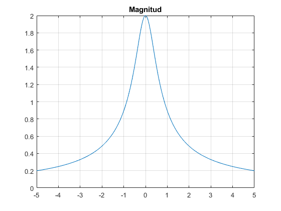
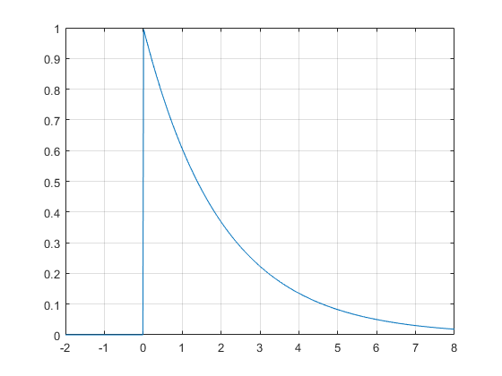

Practica 2 Señales continuas
UNIDAD PROFESIONAL INTERDISCILIPINARIA EN INGENIERIA Y TECNOLOGIAS AVANZADAS
Grupo: 2TV2
Asignatura: Señales y Sistemas
Integrantes:
Vazquez Cruz Rodrigo
Profesor: Dr. Rafael Martinez Martinez
Contents
Objetivos
*Manipulación básica de MATLAB.
*Gráficas de señales reales y complejas continuas.
*Transformación de señales continuas (escalamientos y traslaciones).
*Calculo de energía y potencia de señales continua.
Introduccion
Origen: MATLAB fue originalmente escrito por Cleve Moler, fundador de MathWorks Inc., con el objetivo de proporcionar un acceso fácil al software matricial desarrollado en los proyectos de UNIX LINPACK (de LINear equations PACKage) y EISPACK (de EIgenvalue Subroutines PACKage).
Versiones e historia: La primera versión de MATLAB, a finales de los años 70, se escribió en FORTRAN, siendo la única estructura de datos la matriz. De ahí el nombre del programa, cuyas siglas corresponden a MATrix LABoratory. Posteriormente, en los años 80, MATLAB fue reescrito en C. La versión 3 para MS-DOS es de principios de los años 90. En 1993 aparece la versión 4, para Windows 3.11, que ya incorpora la primera versión del Simulink. La versión actual es la 7.x (las versiones más recientes también se identifican con el nombre del año, así, R2008a, R2008b, R2009a,…) Hoy en día MATLAB es un estándar de facto en ingeniería y computación científica. Se celebran congresos monotemáticos sobre sus aplicaciones y distintas empresas e instituciones venden sus toolboxes como third parties o bien las publican en Internet con acceso libre. Para más información, se sugiere entrar en el sitio www.mathworks.com.
Desarrollo de la practica
1. Realiza las mismas operaciones que Lathi en las secciones M1.1 a M1.4 que se encuentra al final del capítulo 1 y antes de la sección de problemas, cambie los inline por funciones anonimas
2. Resuelve el problema 1.2.2 usando las herramientas del paso anterior.
3. Construya una función que gráfique funciones de IR---->IR en el formato de su elección y pruebe su código para mostrar las gráficas de magnitud y fase para las fórmulas 1, 2 y 3 de la tabla que se encuentra en al sección de tranformada de Fourier de la siguiente página http://rafneta.github.io/Notas/NotasSyS/index.html con valores de a=1/2 y n = 2. El rango de la varible se deja a criterio.
4. Construya una función que gráfique funciones de IR----->IR^2 en el formato de su elección y pruebe su código para mostrar las gráficas de las fórmulas 1, 2 y 3 de la tabla que se encuentra en al sección de tranformada de Fourier de la siguiente página http://rafneta.github.io/Notas/NotasSyS/index.html con valores de a=1/2 y n = 2. El rango de la varible se deja a criterio.
5. Construya una app que permita
- Gráficar señales en tiempo continuo reales, el usuario ingresa la definición de la señal en el formato especifico
M1.1
clear; clc; f= @(t) exp(-t).*cos(2*pi*t); t=0; f(t); t=(-2:2); subplot(2,1,1) plot(t,f(t)); xlabel('t');ylabel('f(t)');grid; title('e^{-t}cos(2\pit)') t=(-2:0.01:2); subplot(2,1,2) plot(t,f(t)); xlabel('t'); ylabel('f(t)'); grid; title('e^{-t}cos(2\pit)')
M1.2
u= @(t) (t>=0); t=(-2:2); subplot(2,2,1) plot(t,u(t)); xlabel('t'); ylabel('u(t)'); title('u(t) para t=(-2:2)') t=(-2:0.01:2); subplot(2,2,2) plot(t,u(t)); xlabel('t'); ylabel('u(t)'); title('u(t) para t=(-2:0.01:2)'); axis([-2 2 -0.1 1.1]); p= @(t) (t>=0) & (t<1); t=(-1:0.01:2); plot(t,p(t)); subplot(2,2,3) plot(t,p(t)) axis([-1 2 -.1 1.1]);
M1.3
g= @(t) f(t).*(t>=0); t=(-2:0.01:2); subplot(2,2,1) plot(t,g(2*t+1)) xlabel('t');ylabel('g(2t+1)'); title('g(2t + 1)') grid; subplot(2,2,2) plot(t,g(-t+1)) xlabel('t');ylabel('g(-t+1)'); title('g(-t + 1)') grid subplot(2,2,3) plot(t,g(2*t+1)+g(-t+1)); title('g2*t +1') xlabel('t'); ylabel('h(t)'); grid;
EJERCICIO 3.1
clear; clc; syms t w f1=exp(-0.5*t)*heaviside(t); F1=fourier(f1); t=-2:0.01:8; w=-5:0.01:5; f1sus=subs(f1); F1sus=subs(F1); MagF1=abs(F1sus); AngF1=angle(F1sus); figure plot(t,f1sus) title('te^(t/2)u(t)') grid on figure plot(w,MagF1) title('Magnitud') grid on figure plot(w,AngF1) title('Fase') grid on
EJERCICIO 3.2
clear; clc; syms t w f1=t*exp(-0.5*t)*heaviside(t); F1=fourier(f1); t=-2:0.01:8; w=-5:0.01:5; f1sus=subs(f1); F1sus=subs(F1); MagF1=abs(F1sus); AngF1=angle(F1sus); figure plot(t,f1sus) title('te^-t/2u(t)') grid on figure plot(w,MagF1) title('Magnitud') grid on figure plot(w,AngF1) title('Fase') grid on
EJERCICIO 3.3
clear; clc; syms t w f1=t^2*exp(-0.5*t)*heaviside(t); F1=fourier(f1); t=-2:0.01:8; w=-5:0.01:5; f1sus=subs(f1); F1sus=subs(F1); MagF1=abs(F1sus); AngF1=angle(F1sus); figure plot(t,f1sus) title('t^2e(-t/2)u(t)') grid on figure plot(w,MagF1) title('Magnitud') grid on figure plot(w,AngF1) title('Fase') grid on
EJERCICIO 4.1
clear; clc; syms t w f1=exp(-0.5*t)*heaviside(t); F1=fourier(f1); t=-2:0.01:8; w=-5:0.01:5; f1sus=subs(f1); F1sus=subs(F1); figure plot(t,f1sus) grid on figure plot3(w,real(F1sus), imag(F1sus)) grid on
EJERCICIO 4.2
clear; clc; syms t w f1=t*exp(-0.5*t)*heaviside(t); F1=fourier(f1); t=-2:0.01:8; w=-5:0.01:5; f1sus=subs(f1); F1sus=subs(F1); figure plot(t,f1sus) grid on figure plot3(w,real(F1sus), imag(F1sus)) grid on

EJERCICIO 4.3
clear; clc; syms t w f1=t^2*exp(-0.5*t)*heaviside(t); F1=fourier(f1); t=-2:0.01:8; w=-5:0.01:5; f1sus=subs(f1); F1sus=subs(F1); MagF1=abs(F1sus); AngF1=angle(F1sus); figure plot(t,f1sus) grid on figure plot3(w,real(F1sus), imag(F1sus)) grid on